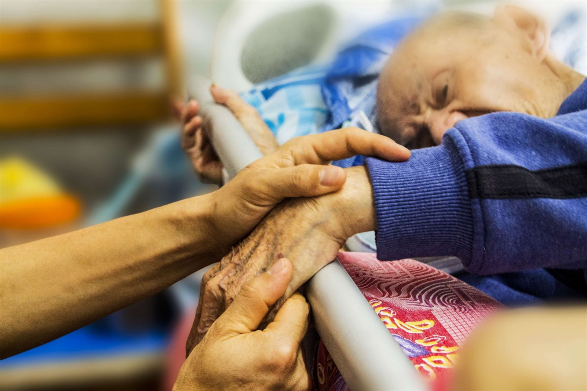

At Quality One Care, we understand that caring for a seriously ill loved one has its own set of challenges and emotions. If your loved one has an advanced or chronic illness, we have services that can help ease his or her suffering and provide the emotional support you need as a caregiver and family member.
Our goal is to help our patients live well during their last months, weeks and days and to provide their loved ones with the support they need during their most difficult time. By providing relief from physical, emotional, social, and spiritual suffering, we enhance the quality of life for seriously ill patients and their families.
Our hospice program cares for infants, children, young, and older adults with life-limiting illnesses or injuries and is focused on the following:
- Palliative (comfort oriented) care
- Pain management.
- Symptom control and emotional support
In addition to enhancing the patient’s care, Quality One Care hospice team provides grief support and counseling to surviving family and friends will assist you by:
- Collaborating with your personal physician and other health care providers, ensuring that all care is well-coordinated and patient needs are clearly communicated.
- Creating a detailed, customized care plan based on input from you, your loved one and family, in addition to health care providers, giving you direction and peace of mind.
- Consulting by providing recommendations for ensuring comfort and management of pain, to improve daily quality of life.
- We will also Coordinate all arrangements for medication, supplies, and equipment needed for successful pain management.
Other services provided include:
- Administer in-home Intravenous medication.
- Monitor the effectiveness of treatments to include patient assessment.
- Counseling and emotional support for patients and their loved ones.
- Enhances quality of life.
- Addresses needs of caregivers.
- Dying and preparatory grief.
- Advance directives.